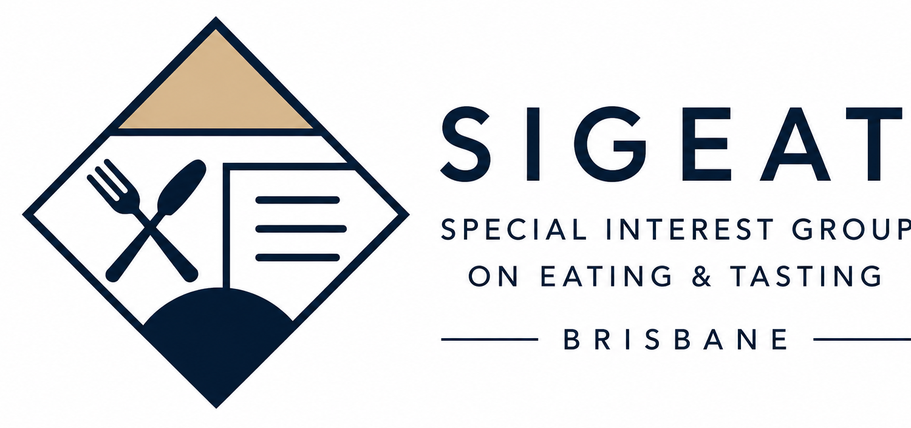

PAPER 001
Shared Foundations
Pita Bread
One of the session favourites. A simple but enjoyable shared starter that worked particularly well as part of a larger group meal.

The next SIGEAT session is scheduled for Friday, 28 August 2026. The venue and cuisine are still to be announced.
SIGEAT is a Friday dining series that borrows the structure of an academic conference to make shared meals easier to record, compare and remember.
SIGEAT 是一个周五聚餐系列：借用学术会议的组织结构，把朋友聚餐变成一套可记录、可比较、可长期回看的共同活动。
A restaurant is the Venue; one dinner is a Session; each ordered dish is recorded as a Paper; tasting together is Peer Review; and the post-dinner archive becomes the Proceedings. These terms are retained only where they correspond to something that actually happens at the table.
餐厅对应 Venue；一次聚餐对应一个 Session；每道菜作为一篇 Paper 记录；共同品尝对应 Peer Review；饭后形成的完整归档称为 Proceedings。只有在桌上确实存在对应行为时，网站才保留这些学术术语。
Held at The Little Greek Taverna, West End, Brisbane on 21 August 2026. The session covered six shared dishes and received an overall score of 4/5.

One of the session favourites. A simple but enjoyable shared starter that worked particularly well as part of a larger group meal.
A good and recommendable dish, although it did not reach the same level as the session's standout pasta.
Better than the lamb dish from the previous session, but noticeably too salty and therefore unlikely to suit everyone.
Good and easy to recommend, but not as memorable or well balanced as the Garlic Prawns Pasta.
Included as part of the shared Greek spread. No separate dish-specific review was recorded for this paper.
The surprise standout of the session: creamy, more balanced than the other dishes and worth ordering again. Its richness makes one moderate serving satisfying, while the small group portion meant two plates were needed for the table.
Good overall quality and fair value for the experience, with Garlic Prawns Pasta and Pita Bread the clearest favourites. Portions were small—the pasta required two plates for the group—and several rich dishes could become heavy in larger quantities. The menu worked best as a group meal where everyone could taste a little of each dish. Novelty was limited overall, but the session still earned a strong 4/5.
Held at Italian Street Kitchen, West End, Brisbane. Four participants shared five dishes. Total bill: A$147; approximately A$37.50 per person.
地点：Italian Street Kitchen, West End, Brisbane。共 4 人参加，分享 5 道菜。实际总账单 A$147，人均约 A$37.50。
A dependable baseline: well executed and balanced, but limited in novelty. Solid enough to order again, though not a Best Paper contender.
可靠的经典基线：完成度和均衡性都合格，但新意有限。属于可以再次点的稳妥选择，但不足以竞争 Best Paper。
A richer variation on the classic pizza template. The prosciutto adds a clear flavour improvement, but the dish remains evolutionary rather than surprising.
在经典披萨结构上的强化版本。Prosciutto 带来了清晰的风味提升，但整体仍属于稳健改良，而不是令人意外的突破。
The main pasta contribution of the session. It added useful variety to an otherwise pizza-heavy table and had one of the more distinctive profiles.
本届主要的意面菜品，为偏重披萨的整桌菜单提供了必要多样性，也是辨识度相对更高的一道。
Clear savoury character and reliable execution. It met the session's acceptance bar, but did not dominate the table.
肉香明确、完成度可靠，达到了本届的录用标准，但没有形成明显的全桌优势。
Best understood simply as a shared starter. It supported the meal well, but was not intended to function as the session's headline dish.
更准确地说，它就是一道共享前菜：很好地承担了配餐和分享作用，但并不是本届的核心菜品。
Reliable overall quality with no obvious failures, but limited novelty and no single dish with a decisive advantage. No Best Paper was awarded.
整体稳定，没有明显踩雷，但 novelty 与惊喜感有限，也没有一道菜形成压倒性优势，因此本届不颁发 Best Paper。
Friday, 28 August 2026 · Venue TBA
The next SIGEAT session has been scheduled, but the venue, cuisine and start time are still to be announced.
Upcoming · Session #03
Friday, 28 August 2026 · Venue and cuisine pending

Completed · Session #02
West End, Brisbane · Greek cuisine · Overall score 4/5
Completed · Session #01已完成 · Session #01
West End, Brisbane · Italian cuisine · Overall score 3.5/5West End, Brisbane · 意大利菜 · 总评分 3.5/5